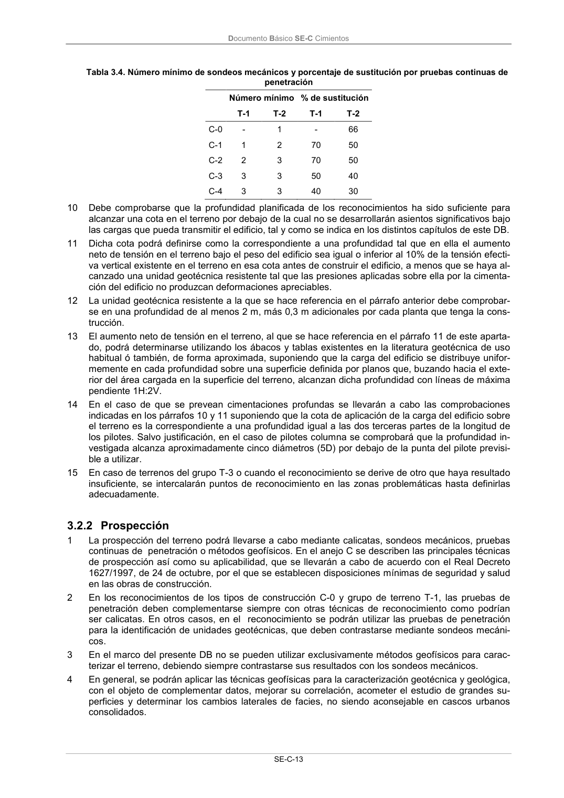

DB-SE-C · 3.2.2 Prospección · versión 2019-12-20
SHA256: a71133f4b0dca253e45ea3071c70f2a512354bcc5cd841bf89b1a502f567ac5e · página física 18 de 165 · métodos de encabezado
solo si están cotejados.
Formatos: Markdown · JSON de bloques · PDF p. 18 · imagen PNG
Documento Básico SE-C Cimientos SE-C-13 Tabla 3.4. Número mínimo de sondeos mecánicos y porcentaje de sustitución por pruebas continuas de penetración Número mínimo % de sustitución T-1 T-2 T-1 T-2 C-0 - 1 - 66 C-1 1 2 70 50 C-2 2 3 70 50 C-3 3 3 50 40 C-4 3 3 40 30 10 Debe comprobarse que la profundidad planificada de los reconocimientos ha sido suficiente para alcanzar una cota en el terreno por debajo de la cual no se desarrollarán asientos significativos bajo las cargas que pueda transmitir el edificio, tal y como se indica en los distintos capítulos de este DB. 11 Dicha cota podrá definirse como la correspondiente a una profundidad tal que en ella el aumento neto de tensión en el terreno bajo el peso del edificio sea igual o inferior al 10% de la tensión efecti- va vertical existente en el terreno en esa cota antes de construir el edificio, a menos que se haya al- canzado una unidad geotécnica resistente tal que las presiones aplicadas sobre ella por la cimenta- ción del edificio no produzcan deformaciones apreciables. 12 La unidad geotécnica resistente a la que se hace referencia en el párrafo anterior debe comprobar- se en una profundidad de al menos 2 m, más 0,3 m adicionales por cada planta que tenga la cons- trucción. 13 El aumento neto de tensión en el terreno, al que se hace referencia en el párrafo 11 de este aparta- do, podrá determinarse utilizando los ábacos y tablas existentes en la literatura geotécnica de uso habitual ó también, de forma aproximada, suponiendo que la carga del edificio se distribuye unifor- memente en cada profundidad sobre una superficie definida por planos que, buzando hacia el exte- rior del área cargada en la superficie del terreno, alcanzan dicha profundidad con líneas de máxima pendiente 1H:2V. 14 En el caso de que se prevean cimentaciones profundas se llevarán a cabo las comprobaciones indicadas en los párrafos 10 y 11 suponiendo que la cota de aplicación de la carga del edificio sobre el terreno es la correspondiente a una profundidad igual a las dos terceras partes de la longitud de los pilotes. Salvo justificación, en el caso de pilotes columna se comprobará que la profundidad in- vestigada alcanza aproximadamente cinco diámetros (5D) por debajo de la punta del pilote previsi- ble a utilizar. 15 En caso de terrenos del grupo T-3 o cuando el reconocimiento se derive de otro que haya resultado insuficiente, se intercalarán puntos de reconocimiento en las zonas problemáticas hasta definirlas adecuadamente. 3.2.2 Prospección 1 La prospección del terreno podrá llevarse a cabo mediante calicatas, sondeos mecánicos, pruebas continuas de penetración o métodos geofísicos. En el anejo C se describen las principales técnicas de prospección así como su aplicabilidad, que se llevarán a cabo de acuerdo con el Real Decreto 1627/1997, de 24 de octubre, por el que se establecen disposiciones mínimas de seguridad y salud en las obras de construcción. 2 En los reconocimientos de los tipos de construcción C-0 y grupo de terreno T-1, las pruebas de penetración deben complementarse siempre con otras técnicas de reconocimiento como podrían ser calicatas. En otros casos, en el reconocimiento se podrán utilizar las pruebas de penetración para la identificación de unidades geotécnicas, que deben contrastarse mediante sondeos mecáni- cos. 3 En el marco del presente DB no se pueden utilizar exclusivamente métodos geofísicos para carac- terizar el terreno, debiendo siempre contrastarse sus resultados con los sondeos mecánicos. 4 En general, se podrán aplicar las técnicas geofísicas para la caracterización geotécnica y geológica, con el objeto de complementar datos, mejorar su correlación, acometer el estudio de grandes su- perficies y determinar los cambios laterales de facies, no siendo aconsejable en cascos urbanos consolidados.
